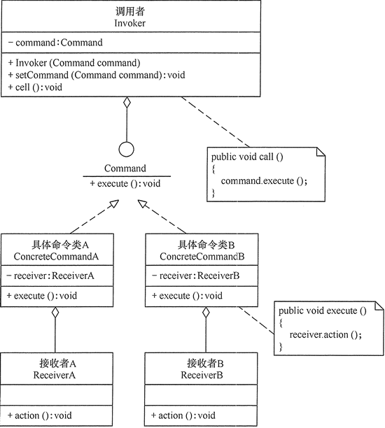

命令模式理解剖析以及应用

命令模式
命令模式是一种数据驱动的设计模式，它属于行为型模式。
命令模式将一个请求封装为一个对象，使发出请求的责任和执行请求的责任分割开。这样两者之间通过命令对象进行沟通，方便将命令对象进行储存、传递、调用、增加与管理。命令模式请求以命令的形式包裹在对象中，并传给调用对象。调用对象寻找可以处理该命令的合适的对象，并把该命令传给相应的对象，该对象执行命令。
意图
- 将一个请求封装成一个对象，从而使您可以用不同的请求对客户进行参数化。
解决问题
在软件系统中，行为请求者与行为实现者通常是一种紧耦合的关系，但某些场合，比如需要对行为进行记录、撤销或重做、事务等处理时，这种无法抵御变化的紧耦合的设计就不太合适。
何时使用？
在某些场合，比如要对行为进行”记录、撤销/重做、事务”等处理，这种无法抵御变化的紧耦合是不合适的。在这种情况下，如何将”行为请求者”与”行为实现者”解耦？将一组行为抽象为对象，可以实现二者之间的松耦合。
应用环境举例
- GUI 中每一个按钮都是一条命令。
- 模拟 CMD。
优点
- 通过引入中间件（抽象接口）降低系统的耦合度。
- 扩展性良好，增加或删除命令非常方便。采用命令模式增加与删除命令不会影响其他类，且满足“开闭原则”。
- 可以实现宏命令。命令模式可以与组合模式结合，将多个命令装配成一个组合命令，即宏命令。
- 方便实现 Undo 和 Redo 操作。命令模式可以与后面介绍的备忘录模式结合，实现命令的撤销与恢复。
- 可以在现有命令的基础上，增加额外功能。比如日志记录，结合装饰器模式会更加灵活。
缺点
- 可能产生大量具体的命令类。因为每一个具体操作都需要设计一个具体命令类，这会增加系统的复杂性。
- 令模式的结果其实就是接收方的执行结果，但是为了以命令的形式进行架构、解耦请求与实现，引入了额外类型结构（引入了请求方与抽象命令接口），增加了理解上的困难。不过这也是设计模式的通病，抽象必然会额外增加类的数量，代码抽离肯定比代码聚合更加难理解。
注意
系统需要支持命令的撤销(Undo)操作和恢复(Redo)操作，也可以考虑使用命令模式
类图
- 抽象命令类（Command）角色：声明执行命令的接口，拥有执行命令的抽象方法 execute()。
- 具体命令类（Concrete Command）角色：是抽象命令类的具体实现类，它拥有接收者对象，并通过调用接收者的功能来完成命令要执行的操作。
- 实现者/接收者（Receiver）角色：执行命令功能的相关操作，是具体命令对象业务的真正实现者。
- 调用者/请求者（Invoker）角色：是请求的发送者，它通常拥有很多的命令对象，并通过访问命令对象来执行相关请求，它不直接访问接收者。
实现
- 调用者
1
2
3
4
5
6
7
8
9
10
11
12
13
14
15
16class Invoker {
private Command command;
public Invoker(Command command) {
this.command = command;
}
public void setCommand(Command command) {
this.command = command;
}
public void call() {
System.out.println("调用者执行命令command...");
command.execute();
}
} - 抽象命令
1
2
3
4interface Command {
public abstract void execute();
} - 具体命令
1
2
3
4
5
6
7
8
9
10
11class ConcreteCommand implements Command {
private Receiver receiver;
ConcreteCommand() {
receiver = new Receiver();
}
public void execute() {
receiver.action();
}
} - 接收者
1
2
3
4
5class Receiver {
public void action() {
System.out.println("接收者的action()方法被调用...");
}
} - 测试结果：
1
2
3
4
5
6
7
8public class CommandPattern {
public static void main(String[] args) {
Command cmd = new ConcreteCommand();
Invoker ir = new Invoker(cmd);
System.out.println("客户访问调用者的call()方法...");
ir.call();
}
}1
2
3客户访问调用者的call()方法...
调用者执行命令command...
接收者的action()方法被调用...
实例
 1. 创建作为命令的接口 Order，然后创建作为请求的 Stock 类。
1. 实体命令类 BuyStock 和 SellStock，实现了 Order 接口，将执行实际的命令处理。
1. 创建作为调用对象的类 Broker，它接受订单并能下订单。
1. Broker 对象使用命令模式，基于命令的类型确定哪个对象执行哪个命令。
1. CommandPatternDemo 类使用 Broker 类来演示命令模式。
1. 创建作为命令的接口 Order，然后创建作为请求的 Stock 类。
1. 实体命令类 BuyStock 和 SellStock，实现了 Order 接口，将执行实际的命令处理。
1. 创建作为调用对象的类 Broker，它接受订单并能下订单。
1. Broker 对象使用命令模式，基于命令的类型确定哪个对象执行哪个命令。
1. CommandPatternDemo 类使用 Broker 类来演示命令模式。
- 创建一个命令接口。
Order.java1
2
3public interface Order {
void execute();
} - 创建一个请求类。
Stock.java1
2
3
4
5
6
7
8
9
10
11
12//具体实例
public class Stock {
private String name = "ABC";
private int quantity = 10;
public void buy(){
System.out.println("Stock [ Name: "+name+", Quantity: " + quantity +" ] bought");
}
public void sell(){
System.out.println("Stock [ Name: "+name+", Quantity: " + quantity +" ] sold");
}
} - 创建实现了 Order 接口的实体类。
BuyStock.javaSellStock.java1
2
3
4
5
6
7
8
9
10
11public class BuyStock implements Order {
private Stock abcStock;
public BuyStock(Stock abcStock){
this.abcStock = abcStock;
}
public void execute() {
abcStock.buy();
}
}1
2
3
4
5
6
7
8
9
10
11public class SellStock implements Order {
private Stock abcStock;
public SellStock(Stock abcStock){
this.abcStock = abcStock;
}
public void execute() {
abcStock.sell();
}
} - 创建命令调用类
Broker.java1
2
3
4
5
6
7
8
9
10
11
12
13
14
15
16
17import java.util.ArrayList;
import java.util.List;
public class Broker {
private List<Order> orderList = new ArrayList<Order>();
public void takeOrder(Order order){
orderList.add(order);
}
// 逐一执行命令行
public void placeOrders(){
for (Order order : orderList) {
order.execute();
}
orderList.clear();
}
} - 使用 Broker 类来接受并执行命令。
CommandPatternDemo.java结果：1
2
3
4
5
6
7
8
9
10
11
12
13
14public class CommandPatternDemo {
public static void main(String[] args) {
Stock abcStock = new Stock();
BuyStock buyStockOrder = new BuyStock(abcStock);
SellStock sellStockOrder = new SellStock(abcStock);
Broker broker = new Broker();
broker.takeOrder(buyStockOrder);
broker.takeOrder(sellStockOrder);
broker.placeOrders();
}
}1
2Stock [ Name: ABC, Quantity: 10 ] bought
Stock [ Name: ABC, Quantity: 10 ] sold